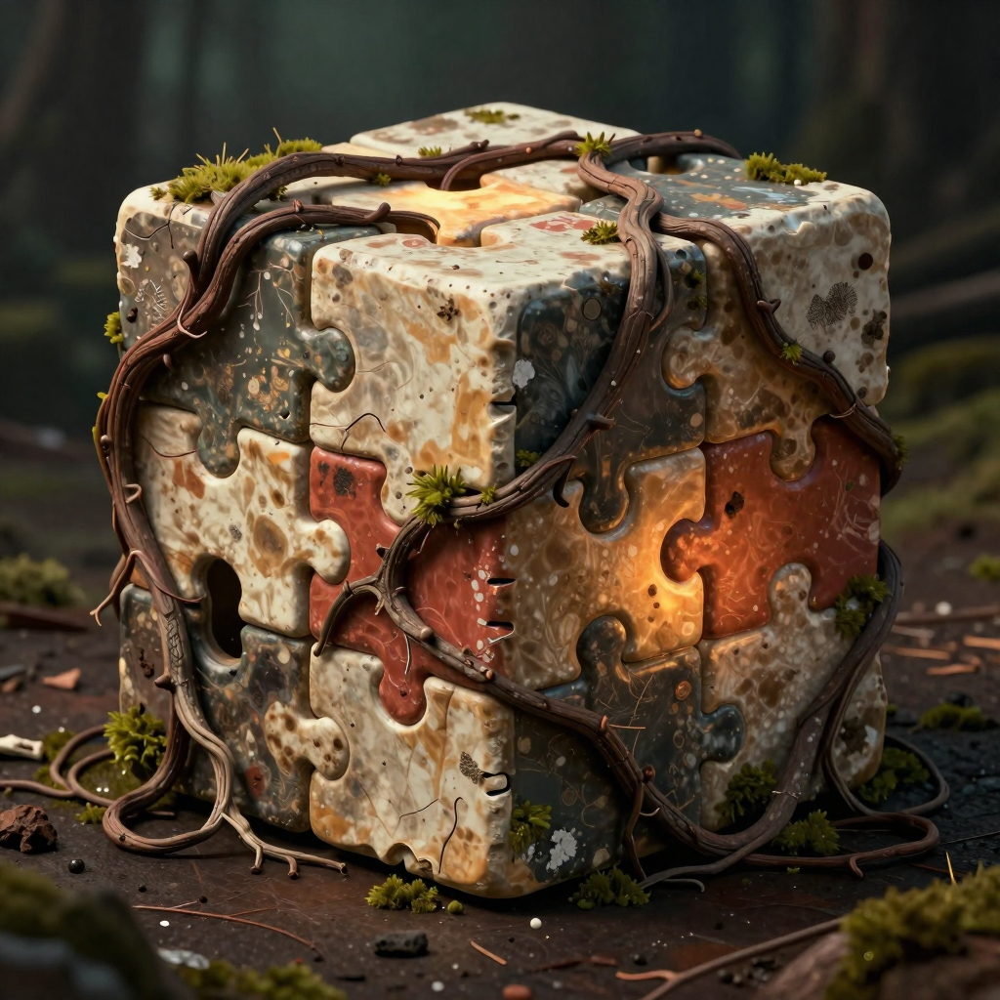

Sticky cinematic reveal
A full-screen canvas becomes the hero moment. Scroll changes the relic state instead of simply moving through sections.

Rootbound Relic // Awake
PuzzleBox Studio creates dark fantasy puzzle experiences with chipped bone panels, root-wrapped mechanisms, moss, old forest dirt, and warm ember logic that feels unearthed rather than manufactured.
HarrowRun // First Project
PuzzleBox Studio should not feel like a clean SaaS template or shiny sci-fi console. It should feel like the rootbound relic reference: a recovered puzzle cube on a forest floor, made from chipped ivory stone, muddy teal-gray inserts, rust-red plates, moss, thorny vines, and a soft ember core.
Workshop Protocol
The Iron Man reference works because it has one iconic object, heavy darkness, smoke, precise HUD overlays, and a scroll-driven reveal. This PuzzleBox version now anchors on the rootbound logo: pale chipped puzzle pieces, muddy teal-gray insets, rust-red accents, real vines, moss, and a warm glow leaking from the center.
Build Notes // What Carries Over
A full-screen canvas becomes the hero moment. Scroll changes the relic state instead of simply moving through sections.
Fine brackets, progress bars, and monospace readouts stay — but the copy shifts from diagnostics to archive/ritual language.
Charred wood, chipped bronze, dust, roots, and warm glow make the brand recognizable before the logo appears.
Archive Ready
Next step: replace the procedural canvas with a true Blender-rendered scroll sequence of the PuzzleBox relic awakening.